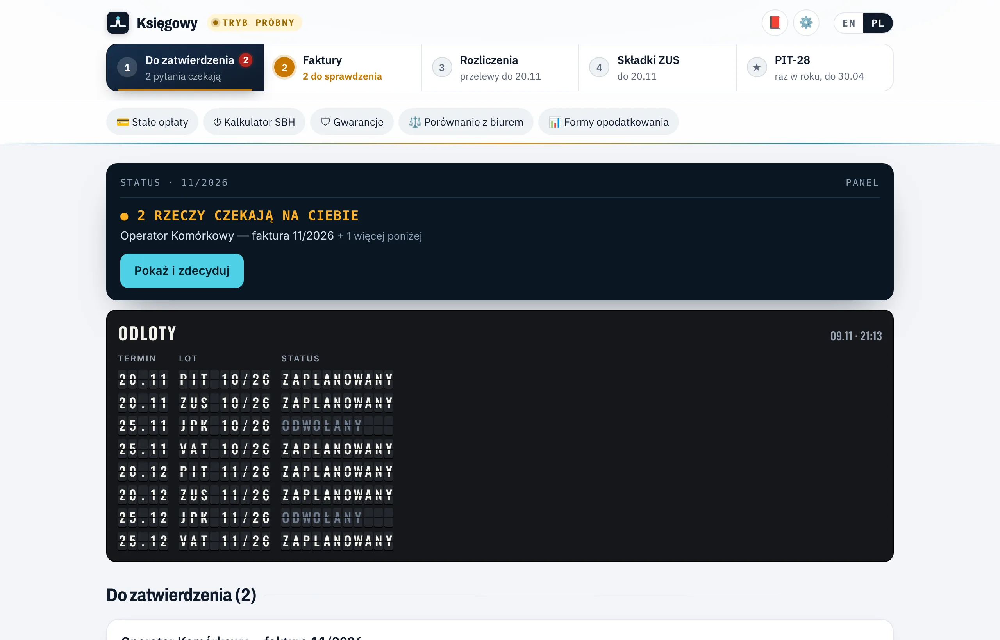
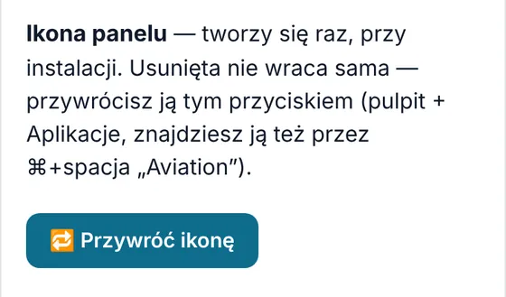
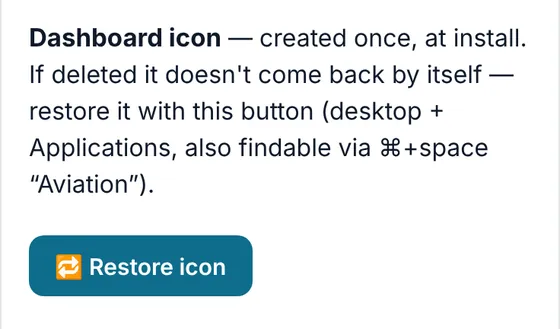
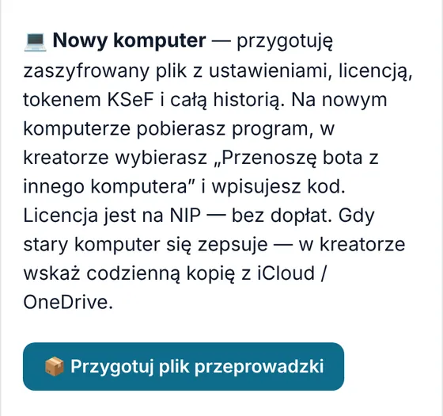
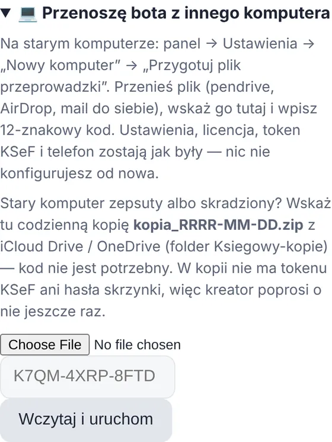
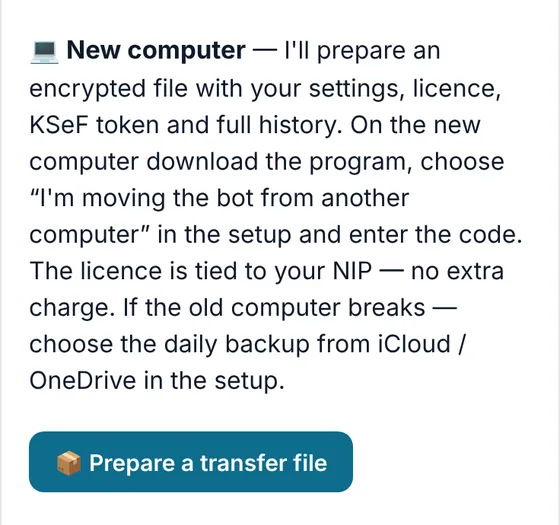
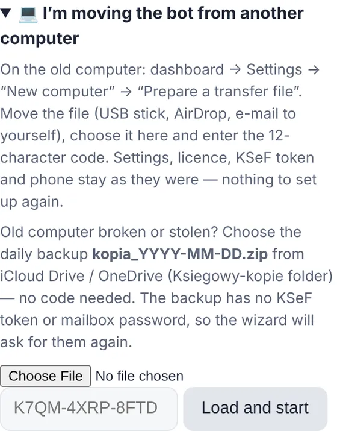
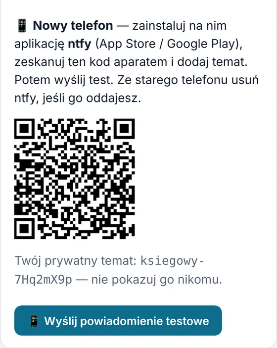
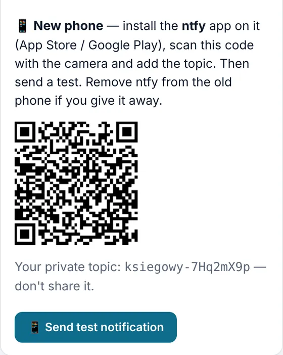

Twoja JDG leci na autopilocie.Your sole-trader books, on autopilot.
Bot księgowy na Maca (Windows i Android — w testach): pobiera faktury z KSeF, liczy VAT, ryczałt i ZUS, przygotowuje JPK i pyta Cię o zgodę na telefonie. Ty tylko klikasz „OK” między lotami.A bookkeeping bot for your Mac (Windows and Android in testing): it fetches invoices from KSeF, calculates VAT, lump-sum tax and ZUS, prepares JPK and asks for your OK on your phone. You just tap between flights.
Sprawdź na swoich fakturach, zanim cokolwiek zmienisz: bot przelicza Twoje ostatnie miesiące z KSeF i porównuje je z biurem, faktura po fakturze. Potem pełny miesiąc na żywo za darmo, bez karty.Check it on your own invoices before you change anything: the bot recalculates your last months from KSeF and compares them with your accountant, invoice by invoice. Then a full live month for free, no card. Zobacz, jak działa bot →See how the bot works →
Po zakupie 30 dni na zwrot pieniędzy bez podawania przyczyny. Nie masz jeszcze firmy? Przewodnik „Zakładam firmę” (PL/EN, za darmo).After you buy: 30-day money-back guarantee, no questions asked. No business yet? The “Start a business” guide (PL/EN, free).
| TERMINDUE | LOTFLIGHT | STATUSSTATUS |
|---|---|---|
| 20.12 | ZUS 11/26ZUS 11/26 | ODLECIAŁDEPARTED |
| 20.12 | PIT 11/26PIT 11/26 | ODLECIAŁDEPARTED |
| 25.12 | VAT 11/26VAT 11/26 | WEJŚCIE BOARDING |
| 25.12 | JPK 11/26JPK 11/26 | WEJŚCIE BOARDING |
| TERMINDUE | LOTFLIGHT | STATUSSTATUS |
|---|---|---|
| 20.12 | ZUS 11/26ZUS 11/26 | ODLECIAŁDEPARTED |
| 20.12 | PIT 11/26PIT 11/26 | ODLECIAŁDEPARTED |
| 25.12 | VAT 11/26VAT 11/26 | ODLECIAŁDEPARTED |
| 25.12 | JPK 11/26JPK 11/26 | ODLECIAŁDEPARTED |
Lista kontrolnaChecklist
Co bot robi za CiebieWhat the bot does for you
POBRANEFETCHED
KSeF
Sam pobiera faktury z KSeF. Nowego dostawcę potwierdzasz jednym kliknięciem, stałych księguje bez pytania.Fetches your KSeF invoices by itself. Confirm a new supplier with one tap; regular ones are booked without asking.
POLICZONECALCULATED
VAT · ryczałt
Co miesiąc liczy VAT i ryczałt, wysyła zestawienie i przypomina o przelewach.Calculates VAT and lump-sum tax every month, sends a summary and reminds you to pay.
GOTOWEREADY
JPK_V7
Przygotowuje JPK_V7M albo V7K i wysyła go dopiero po Twojej zgodzie.Prepares JPK_V7M or V7K and files it only after you approve.
PILNOWANETRACKED
ZUS
Pilnuje ulg i wakacji składkowych. Gdy masz bazę poza Polską i tam płacisz składki, polskich nie nalicza.Tracks reliefs and contribution holidays. If your home base is outside Poland and you pay contributions there, it doesn’t charge Polish ones.
PORÓWNANECOMPARED
PIT-28
Roczny PIT-28 z ulgami i porównanie ryczałtu, liniowego i skali przed 20 lutego.Annual PIT-28 with reliefs, and a lump-sum vs flat vs scale comparison before 20 February.
LOKALNIELOCAL
Twoje daneYour data
Działa na Twoim komputerze. Przez nasz serwer przechodzą tylko zaszyfrowane dane dla aplikacji na iPhone'a, których nie odczytamy; kopie idą do Twojej własnej chmury (na Macu iCloud).Runs on your own computer. Only encrypted data for the iPhone app passes through our server, and we can’t read it; backups go to your own cloud (iCloud on a Mac).
BONUS · GWARANCJEBONUS · WARRANTIES
Paragon i gwarancja? Zdjęcie — i znajdziesz w 3 sekundy.Receipt and warranty? One photo — found in 3 seconds.
Zdjęcie paragonu mailem do bota, sprzęt z faktur KSeF trafia sam. Wpisujesz „mikrofalówka bosch” i widzisz sklep, datę i do kiedy jest chroniona; miesiąc przed końcem — przypomnienie. Firmowe i prywatne osobno, w Twoim iCloud.E-mail a photo of the receipt to the bot; equipment from KSeF invoices lands there by itself. Type “microwave bosch” and you see the shop, the date and how long it is protected; a reminder a month before the end. Business and private kept apart, in your iCloud.
Prawdziwy panel, nie makietaThe real dashboard, not a mock-up
Tak to wygląda na Twoim komputerzeThis is what it looks like on your computer
Zrzuty ekranu z programu w trybie próbnym — dane przykładowe. Kroki miesiąca u góry: co czeka, co zrobione, jakie terminy. Tablica odlotów pokazuje, co już „odleciało”, a co jeszcze stoi na płycie.Screenshots of the program in trial mode — sample data. The month’s steps at the top: what is waiting, what is done, what the deadlines are. The departures board shows what has already “departed” and what is still on the apron.

Panel otwierasz na komputerze (ikona na pulpicie). iPhone: aplikacja Tax Help (na razie w TestFlight — link w panelu i w mailu z zaproszeniem) pokazuje pytania z przyciskami, przelewy i terminy — zaszyfrowane między komputerem a telefonem. Android: pytania i przypomnienia przychodzą w aplikacji ntfy, z przyciskami.You open the dashboard on your computer (desktop icon). iPhone: the Tax Help app (in TestFlight for now — link in the dashboard and in the invitation e-mail) shows questions with buttons, transfers and deadlines — encrypted between your computer and phone. Android: questions and reminders arrive in the ntfy app, with buttons.
Twój miesiącYour month
Ty wybierasz dzień. Bot pilnuje terminu.You pick the day. The bot minds the deadline.
Nic nie dzieje się samo w konkretnym dniu. Każdą sprawę zatwierdzasz, kiedy Ci pasuje — między rotacjami, w hotelu, w wolny dzień. Bot przygotowuje wszystko wcześniej i przypomina przed terminem, aż klikniesz. Gdy komputer śpi, o terminach przypomni nasz serwer — bez kwot.Nothing happens on a fixed day. You approve each item when it suits you — between rotations, at the hotel, on a day off. The bot prepares everything early and reminds you before the deadline until you tap. If your computer sleeps, our server reminds you of deadlines — without amounts.
Darmowa próbaFree trial
Wpisujesz niżej NIP i e-mail, klikasz link w mailu — i od razu dostajesz plik licencji na pełny miesiąc rozliczeń. Bez karty, bez zobowiązań.Enter your NIP and e-mail below, click the link we e-mail you — and you get a licence file for a full month of bookkeeping right away. No card, no commitment.
Kreator i test wstecznyInstaller and backtest
Kreator prowadzi Cię krok po kroku — najdłużej trwa token KSeF i skrzynka e-mail dla bota (krok KSeF możesz dokończyć później). Na koniec bot liczy Twoje ostatnie miesiące z KSeF i porównuje je z biurem — faktura po fakturze.The wizard walks you through it step by step — the KSeF token and a mailbox for the bot take longest (you can finish the KSeF step later). At the end the bot calculates your last months from KSeF and compares them with your accountant — invoice by invoice.
TelefonPhone
Skanujesz kod QR z panelu. iPhone: aplikacja Tax Help (na razie w TestFlight — link w panelu i w mailu z zaproszeniem) — pytania z przyciskami, przelewy i terminy, zaszyfrowane między komputerem a telefonem. Android: ntfy — pytania i przypomnienia z przyciskami.Scan a QR code from the dashboard. iPhone: the Tax Help app (in TestFlight for now — link in the dashboard and in the invitation e-mail) — questions with buttons, transfers and deadlines, encrypted between your computer and phone. Android: ntfy — questions and reminders with buttons.
AutopilotAutopilot
Bot pracuje w tle. Na pulpicie masz ikonę „Aviation Tax Help — panel” (żółta tablica „TAX”), a w wyszukiwarce komputera aplikację „Aviation Tax Help”: jedno kliknięcie i widzisz wszystko w przeglądarce. Kupujesz po próbie — licencja wczytuje się sama.The bot runs in the background. An “Aviation Tax Help — panel” icon on your desktop (the yellow “TAX” sign) and an “Aviation Tax Help” app in your computer’s search open everything in your browser with one click. Buy after the trial — the licence loads itself.
W praktyceIn practice
Jeden miesiąc — tak to wygląda naprawdęOne month — this is what it really looks like
Trzy kadry z zamkniętego miesiąca: powiadomienie na telefonie, mail z rozliczeniem i ekran panelu. Dane przykładowe, układ prawdziwy.Three frames from a closed month: the phone notification, the settlement e-mail and the dashboard screen. Sample data, real layout.
Telefon · powiadomienie (Android: ntfy)Phone · notification (Android: ntfy)
✅ Faktura sprzedaży — w KSeF, zatwierdzona ✅ VAT 11/2026 — przelew potwierdzony ✅ PIT (ryczałt) 11/2026 — przelew potwierdzony ✅ ZUS 11/2026 — przelew potwierdzony ✅ JPK_V7M — przyjęty, UPO w załączniku maila✅ Sales invoice — in KSeF, approved ✅ VAT 11/2026 — transfer confirmed ✅ PIT (lump sum) 11/2026 — transfer confirmed ✅ ZUS 11/2026 — transfer confirmed ✅ JPK_V7M — accepted, UPO attached to the e-mail
Mail · rozliczenieE-mail · settlement
Bot pobrał faktury z KSeF, zaksięgował je bez pytania (stali dostawcy) i policzył VAT, ryczałt i ZUS. Kwoty, rachunki i terminy — niżej w mailu.The bot fetched your KSeF invoices, booked the regular suppliers without asking and calculated VAT, lump-sum tax and ZUS. Amounts, accounts and dates — below in the e-mail.
| ODLOTY | 27.12 · 09:10 |
| TERMIN | LOT | STATUS |
|---|---|---|
| 20.12 | ZUS 11/26 | ODLECIAŁ |
| 20.12 | PIT 11/26 | ODLECIAŁ |
| 25.12 | VAT 11/26 | ODLECIAŁ |
| 25.12 | JPK 11/26 | ODLECIAŁ |
| 20.01 | ZUS 12/26 | ZAPLANOWANY |
Panel · po zamknięciu miesiącaDashboard · after closing the month
KalkulatorCalculator
Biuro czy bot — ile płaciszAccountant or bot — what you pay
Porównaj roczny koszt biura z licencją. Różnica zostaje u Ciebie — co roku, nie tylko w pierwszym.Compare your accountant’s yearly cost with the licence. The difference stays with you — every year, not just the first.
Ceny brutto miesięcznie. Pierwszy przykład to typowy zestaw pilota: biuro rachunkowe plus osobne programy do wystawiania faktur i do zatwierdzania zakupów z KSeF — z botem oba programy przestają być potrzebne. Pozostałe z cenników dostawców (sprawdzone 7.11.2026; szczegóły niżej). Biuro tradycyjne — typowy przedział 400–600 zł.Gross monthly prices. The first example is a typical pilot’s set-up: an accounting office plus separate apps for issuing invoices and for approving KSeF purchases — with the bot you need neither app. The others come from the providers’ price lists (checked 7 Nov 2026; details below). Traditional office — typical range PLN 400–600.
Twój koszt w rokuYour cost per year
Różnica zostaje w Twojej kieszeni:The difference stays in your pocket:
Wyliczenie: abonament biura × 12 minus cena licencji (brutto). W pierwszym roku liczymy cenę startową, dopóki są wolne miejsca. Na czas próby wiele osób zostaje przy biurze i porównuje wyniki.How it is calculated: accountant fee × 12 minus the licence price (gross). Year one uses the launch price while places are left. During the trial many people keep their accountant and compare the results. * Ilustracja, nie oferta: pięć lat liczymy po dzisiejszym cenniku; gwarantowana cena obowiązuje 2 lata od zakupu.* An illustration, not an offer: five years at today’s price list; the locked price applies for 2 years from purchase.
| Aviation Tax Help | Program samoobsługowyDIY accounting program np. inFakt Standarde.g. inFakt Standard | Biuro online z księgowymOnline office with an accountant np. inFakt, ifirmae.g. inFakt, ifirma | Biuro tradycyjneTraditional office | |
|---|---|---|---|---|
| Kto wykonuje pracęWho does the work | Bot — sam pobiera, liczy i przygotowuje; Ty zatwierdzasz jednym kliknięciemThe bot — fetches, calculates and prepares; you approve with one tap | Ty — wprowadzasz i księgujesz w programieYou — you enter and book everything in the program | KsięgowyAn accountant | KsięgowyAn accountant |
| Gdzie są Twoje daneWhere your data lives | ✓ na Twoim komputerzeon your own computer | w chmurze dostawcyin the provider’s cloud | w chmurze dostawcyin the provider’s cloud | w biurze i w jego programieat the office and in its software |
| Pod lotnictwoMade for aviation | ✓ faktura od linii (samofakturowanie), kalkulator SBH, przerwy w lataniu, waluty po NBPairline self-billing, SBH calculator, breaks in flying, NBP currency rates | program ogólnygeneral-purpose program | obsługa ogólnageneral service | zależy od biuradepends on the office |
| Cena za rok (brutto)Price per year (gross) | 599 zł–699 zł cabin crewcabin crew 299 zł–399 zł | ok. 589 złapprox. PLN 589 od 39,90 zł netto/mies.from PLN 39.90 net/month | ok. 2 952–3 114 złapprox. PLN 2,952–3,114 od 200 zł (inFakt) / 211 zł (ifirma) netto/mies.from PLN 200 (inFakt) / 211 (ifirma) net/month | zwykle 4 800–7 200 złusually PLN 4,800–7,200 400–600 zł/mies.PLN 400–600/month |
Kiedy lepsze jest biuro: gdy chcesz, żeby księgował i odpowiadał za to ktoś inny, masz pracowników, handel towarami, przewóz osób (Uber, Bolt — kasa fiskalna) albo sprawy sporne z urzędem. Kiedy my: latasz, masz kilka stałych faktur w miesiącu (linia, szkoła lotnicza), jesteś na ryczałcie i chcesz płacić jak za program, a mieć pracę zrobioną jak w biurze.When an office is better: you want someone else to do the books and be responsible for them, you have employees, goods trading, passenger transport (Uber, Bolt — cash register) or disputes with the tax office. When we fit: you fly, have a few regular invoices a month (airline, flight school), are on lump-sum tax and want to pay a program’s price while the work gets done like at an office.
Ceny konkurencji sprawdzone 7.11.2026 na stronach dostawców: inFakt Standard, inFakt z księgowym, ifirma biuro rachunkowe (ryczałt z VAT, do 10 dokumentów kosztowych, od 09/2026). Netto przeliczone na brutto (×1,23) i zaokrąglone; ceny mogą się zmienić, a dodatkowe usługi bywają płatne osobno. Biuro tradycyjne — przykładowy przedział, nie jedna oferta: wpisz w kalkulatorze kwotę z faktury swojego biura. To ilustracja kosztów, nie porównanie zakresu usług — biuro przejmuje część pracy i odpowiedzialności, program nie. Nazwy należą do ich właścicieli.Competitor prices checked on 7 Nov 2026 on the providers’ sites: inFakt Standard, inFakt with accountant, ifirma accounting office (lump-sum with VAT, up to 10 cost documents, from 09/2026). Net converted to gross (×1.23) and rounded; prices may change and extra services can cost more. Traditional office — an example range, not one offer: enter your own office’s fee in the calculator. This illustrates costs, not the scope of service — an office takes over part of the work and liability, a program does not. Names belong to their owners.
CenaPricing
Jedna licencja na rok, na Twój NIPOne licence a year, tied to your NIP
Aktualizacje w cenie — instalujesz je jednym kliknięciem na telefonie. 30 dni na zwrot bez podawania przyczyny. Cena gwarantowana przez 2 lata* — odnowienia w tym czasie kosztują najwyżej tyle, ile cena odnowienia w cenniku z dnia Twojego zakupu.Updates included — install them with one tap on your phone. 30-day refund, no questions asked. Price locked for 2 years* — your renewals in that time cost at most the renewal price on the day you buy.
Start sprzedaży 1.01.2027.Sales start 1 Jan 2027. Do tego dnia trwają zamknięte testy — licencje testowe z zaproszeniem. Cena startowa dla pierwszych kupujących obowiązuje od startu.Until then we run closed tests with invited testers. The launch price for the first buyers applies from the start.
CENA STARTOWA DLA PIERWSZYCH 50 OSÓBLAUNCH PRICE FOR THE FIRST 50 CUSTOMERS
PILOT
499 zł brutto / pierwszy rokgross / first year
płatne raz w roku, bez abonamentupaid once a year, no subscription · ≈ 42 zł / mies.month
Czynny podatnik VAT: ≈ VAT-registered: ≈ 34 zł / mies. netto — VAT z faktury odliczaszmonth net — you deduct the VAT on the invoice
Cena startowa zakończonaLaunch price has ended
Kolejne lataFollowing years 599 zł / rokyear · ≈ 50 zł / mies.month
cena gwarantowana przez 2 lata od zakupu* (kwota netto; zmiana stawki VAT zmienia kwotę brutto) · *warunkiprice locked for 2 years from purchase* (net amount; a VAT rate change changes the gross) · *conditions
- Ryczałt + VAT (miesięcznie lub kwartalnie)Lump-sum tax + VAT (monthly or quarterly)
- JPK_V7M / V7K, faktury z KSeFJPK_V7M / V7K, KSeF invoices
- Roczny PIT-28 i porównanie formAnnual PIT-28 and tax-form comparison
30 dni na zwrot30-day refundcena gwarantowana 2 lataprice locked 2 years**
Apple PayApple PayGoogle PayGoogle PayKarta Visa / MastercardVisa / Mastercard cardBLIKBLIKPrzelew onlineOnline bank transfer
CABIN CREW
249 zł brutto / pierwszy rokgross / first year
płatne raz w roku, bez abonamentupaid once a year, no subscription · ≈ 21 zł / mies.month
Cena startowa zakończonaLaunch price has ended
Kolejne lataFollowing years 299 zł / rokyear · ≈ 25 zł / mies.month
cena gwarantowana przez 2 lata od zakupu* (kwota netto; zmiana stawki VAT zmienia kwotę brutto) · *warunkiprice locked for 2 years from purchase* (net amount; a VAT rate change changes the gross) · *conditions
- Ryczałt ze zwolnieniem z VATLump-sum tax, VAT-exempt
- Bez JPK — dowolna liczba fakturNo JPK — any number of invoices
- Pilnowanie limitu zwolnienia z VATVAT-exemption limit watch
- Roczny PIT-28 i porównanie formAnnual PIT-28 and tax-form comparison
30 dni na zwrot30-day refundcena gwarantowana 2 lataprice locked 2 years**
Apple PayApple PayGoogle PayGoogle PayKarta Visa / MastercardVisa / Mastercard cardBLIKBLIKPrzelew onlineOnline bank transfer
Każdy klient ma w panelu swój kod polecający. Gdy znajomy kupi licencję z tym kodem i minie 30 dni gwarancji zwrotu, obie licencje przedłużają się o 60 dni — samo, bez kodów przy kasie. Sześć poleceń w roku to prawie cały rok gratis.Every customer has a referral code in their dashboard. When a friend buys a licence with it and the 30-day refund period passes, both licences are extended by 60 days — automatically, no codes at checkout. Six referrals in a year make almost a whole free year.
Masz kod od znajomego:You have a friend’s code: — dodamy go do zakupu automatycznie.we will add it to your purchase automatically.
Pytania o zakup?Questions about buying? help@aviationtaxhelp.pl
Darmowa próbaFree trial
Sprawdź na swoich fakturachTry it on your own invoices
- Od razu test wsteczny: Twoje ostatnie miesiące z KSeF porównane z biurem.Straight away a backtest: your last months from KSeF compared with your accountant.
- Pełny cykl miesiąca na żywo: do 28. dnia następnego miesiąca.A full live monthly cycle: until the 28th of next month.
- Bez karty płatniczej. Jedna próba na NIP.No payment card. One trial per NIP.
- ✓ Masz zaproszenie do zamkniętych testów — licencja testowa ważna do 31.01.2027.✓ You are invited to the closed beta — test licence valid until 31.01.2027.
- Po zakupie ustawienia i dane zostają, a przez 30 dni możesz zrezygnować z pełnym zwrotem.When you buy, settings and data stay — and for 30 days you can cancel with a full refund.
Zamknięte testy — próba tylko z linku z zaproszeniem.Closed beta — trial only via an invitation link. Chcesz dołączyć? Napisz do nas — odeślemy link z zaproszeniem.Want to join? Write to us — we’ll send you an invitation link.
✉️ Poproś o zaproszenieAsk for an invitation
E-mail: help@aviationtaxhelp.pl
Dla kogoWho it’s for
Czy bot Cię obsłuży? Trzy pytania.Will the bot cover you? Three questions.
Odpowiadasz o sobie, a nie czytasz o innych. Wynik jest uczciwy: gdy coś jest poza zakresem, powiemy to wprost.You answer about yourself instead of reading about others. The result is honest: when something is out of scope, we say so.
1 · Jak rozliczasz firmę?How is your business taxed?
2 · Ile faktur sprzedaży wystawiasz w miesiącu?How many sales invoices a month?
3 · Pracownicy, handel towarami albo kasa fiskalna?Employees, goods trading or a cash register?
Odpowiedz na trzy pytania — wynik pojawi się tutaj.Answer the three questions — the result appears here.
Bot Cię obsłużyThe bot covers you
Typowy pilot lub cabin crew: faktura dla linii, czasem druga — np. zajęcia w szkole lotniczej, także z inną stawką ryczałtu — i kilka-kilkanaście zakupów (telefon, sprzęt, szkolenia, subskrypcje).A typical pilot or cabin crew member: an invoice to the airline, sometimes a second one — e.g. teaching at a flight school, even at a different lump-sum rate — and a handful of purchases (phone, equipment, training, subscriptions).
Bot robi wszystkie obowiązki miesięczne i roczne — pełna lista jest w sekcji Zakres. To zakres, dla którego go zbudowaliśmy.The bot handles every monthly and yearly task — the full list is in the Scope section. This is what it was built for.
Sprawdzę za darmo na moich fakturachCheck it free on my invoicesBot Cię obsłuży — zapyta o nietypoweThe bot covers you — and asks about the unusual
Np. nowy klient, usługi z zagranicy, auto w firmie, zakupy w euro, drogi sprzęt, prywatna giełda.E.g. a new client, services from abroad, a company car, purchases in euro, expensive equipment, private investing.
Pytania (każde to 1 kliknięcie, z gotową propozycją):Questions (each is 1 tap, with a ready suggestion):
- nowy dostawca — ile VAT odliczyć; potem już samoa new supplier — how much VAT to deduct; after that it’s automatic
- każda faktura sprzedaży — czy kwota się zgadzaeach sales invoice — is the amount right
- auto — propozycja 50% VAT; 100% zmieniasz w panelu, gdy auto jest tylko firmowecar — 50% VAT suggested; switch to 100% in the dashboard if the car is business-only
- drogi sprzęt — propozycja wpisu do środków trwałychexpensive equipment — suggested as a fixed asset
- sprzedawca z UE — usługa (bot liczy import usług) czy towar (ostrzeżenie)EU seller — a service (the bot handles import of services) or goods (a warning)
- giełda (PIT-38) — raz w roku wrzucasz PIT-8C od polskiego brokera, a od zagranicznego plik z transakcjami (sam czyta Interactive Brokers; przy innych wpisujesz gotowe kwoty — wsparcie jest techniczne: sprawdzi, czy plik da się odczytać, ale nie przepisuje transakcji ani nie doradza podatkowo); bot liczy FIFO, CFD, dywidendy z podatkiem pobranym za granicą i odlicza straty z lat ubiegłychinvesting (PIT-38) — once a year you drop in your Polish broker’s PIT-8C, and for foreign brokers the transaction file (Interactive Brokers is read directly; for others you enter ready amounts — support is technical: it checks whether a file can be read, but doesn’t re-type transactions or give tax advice); the bot calculates FIFO, CFDs, dividends with foreign withholding tax and deducts prior-year losses
Ile pracy: na starcie więcej pytań (każdy nowy dostawca), potem coraz mniej, bo stali dostawcy księgują się sami.How much work: more questions at the start (every new supplier), then fewer, as regular suppliers are booked automatically.
Sprawdzę za darmo na moich fakturachCheck it free on my invoicesTego bot nie obsłużyThis is beyond the bot
- pracownicy lub zleceniobiorcy (listy płac)employees or contractors (payroll)
- handel towarami, towary z UE i spoza UE, kasa fiskalnatrading goods, goods from/to the EU or outside it, a cash register
- skala lub podatek liniowy przez cały rok (księga KPiR), spółkiscale or flat-rate tax all year (KPiR ledger), companies
Tego bot nie obsługuje i nie udajemy, że jest inaczej. Przy towarach z UE wyraźnie Cię ostrzeże.The bot doesn’t handle these and we won’t pretend it does. For goods from the EU it warns you clearly.
Pełny zakres — co robi, a czego nie — jest w sekcji Zakres.The full scope — what it does and doesn’t — is in the Scope section.
Załóż firmę krok po kroku — za darmoSet up your business step by step — free
Przewodnik dla Polaków i cudzoziemców — z PESEL-em i bez: urzędy, linki, formularze pole po polu (PL/EN). Gdy firma ruszy, wróć po próbę: bot policzy pierwszy miesiąc od razu.A guide for Poles and foreigners — with or without PESEL: offices, links, paper forms field by field (PL/EN). Once the business is running, come back for the trial: the bot settles the first month straight away.
🛫 Otwieram przewodnik „Zakładam firmę”Open the “Start a business” guidePełna przejrzystośćFull transparency
Co bot robi, a czego nieWhat the bot does — and what it doesn’t
Bez gwiazdek i drobnego druku. Jeśli czegoś tu nie ma, bot tego nie robi.No asterisks, no small print. If it isn’t listed here, the bot doesn’t do it.
- Co miesiąc samo: faktury z KSeF, kursy NBP, VAT, ryczałt, składki, ewidencja, JPK i zestawienie mailem.Every month, automatically: KSeF invoices, NBP rates, VAT, lump-sum tax, contributions, records, JPK and a summary by e-mail.
- Ty klikasz: nowy dostawca, faktura od linii, wysyłka JPK i „przelew zrobiony” — kilka kliknięć w miesiącu, na telefonie albo w panelu na komputerze (ikona na pulpicie).You tap: a new supplier, the airline invoice, filing JPK and “transfer done” — a few taps a month, on your phone or in the dashboard on your computer (desktop icon).
- Ty robisz: przelewy w banku (kwoty gotowe) i raz w roku PIT-28 w Twój e-PIT z przewodnikiem okienko po okienku.You do: bank transfers (amounts ready) and once a year PIT-28 in Twój e-PIT with a box-by-box guide.
- Co roku: PIT-28 z ulgami, porównanie form opodatkowania przed 20 lutego, roczna składka zdrowotna, limit VAT (cabin crew).Every year: PIT-28 with reliefs, a tax-form comparison before 20 February, the annual health contribution, the VAT limit (cabin crew).
- Dla kogo: kilka stałych faktur w miesiącu na ryczałcie (np. linia i szkoła lotnicza, także z dwiema stawkami) — pełna obsługa; nietypowe zakupy i dodatki — z pytaniami; pracownicy, towary, KPiR — zostań przy biurze.Who it’s for: a few regular invoices a month on lump-sum tax (e.g. an airline and a flight school, also with two rates) — fully covered; unusual purchases and extras — with questions; employees, goods, KPiR — keep your accountant.
- Nigdy sam: nic nie idzie do urzędu bez Twojej zgody; za deklaracje odpowiadasz Ty, jak dziś.Never on its own: nothing goes to the tax office without your OK; you are responsible for the returns, as today.
Pokaż szczegóły: pełna lista, przykłady powiadomień, formy opodatkowaniaShow details: the full list, sample notifications, tax forms
Co miesiącEvery month
RobiDoes
- Pobiera z KSeF faktury zakupowe i sprzedażowe, także w walutach (kurs NBP z właściwego dnia).Fetches purchase and sales invoices from KSeF, also in foreign currencies (NBP rate from the correct day).samoautomatic
- Sam proponuje, ile VAT odliczyć (100%, 50% przy aucie, 0%) — Ty potwierdzasz nowego dostawcę jednym kliknięciem. Znanych sprzedawców księguje już sam i daje Ci znać — ale ostatnie słowo zawsze należy do Ciebie: przycisk „Zmień” poprawia wszystko jednym kliknięciem.Suggests how much VAT to deduct (100%, 50% for a car, 0%) — you confirm a new supplier with one tap. Known sellers are booked automatically and you get a heads-up — but you always have the last word: the “Change” button fixes anything in one tap.1 kliknięcie1 tap
- Liczy VAT, zaliczkę ryczałtu i składki ZUS (z ulgami i wakacjami składkowymi).Calculates VAT, the lump-sum tax advance and ZUS contributions (with reliefs and contribution holidays).samoautomatic
- Prowadzi ewidencję przychodów i wykaz środków trwałych, wymagane na ryczałcie.Keeps the revenue register and the fixed-asset list required on lump-sum tax.samoautomatic
- Sam przygotowuje JPK_V7M lub V7K. Wysyłasz jednym kliknięciem „Wyślij” na telefonie — bez logowania, podpisu i plików; potwierdzenie z urzędu (UPO) przychodzi mailem.Prepares JPK_V7M or V7K by itself. You file it with one tap on “Send” on your phone — no login, signature or files; the tax office receipt (UPO) arrives by e-mail.1 kliknięcie1 tap
- Wysyła zestawienie z kwotami i numerami rachunków do przelewów, przypomina o terminach.Sends a summary with amounts and account numbers for transfers, and reminds you of deadlines.samoautomatic
- Pilnuje, żeby nic nie uciekło: alarm przy obcej fakturze na Twój NIP, zmiana konta dostawcy i biała lista VAT, polski VAT od zagranicznej usługi, ostatni miesiąc na odliczenie VAT z faktury czekającej na decyzję.Makes sure nothing slips: an alarm for an unknown invoice on your NIP, a supplier’s changed account and the VAT white list, Polish VAT charged by a foreign service, the last month to deduct VAT on an invoice still waiting for your decision.samoautomatic
- Kalkulator SBH: z godzin z rostera liczy, ile powinno być na fakturze linii — i odwrotnie. Raz na kwartał przegląd stałych opłat: podwyżki, nowe, znikające i podwójne.SBH calculator: from your roster hours it works out what the airline invoice should be — and the other way round. Once a quarter a review of recurring charges: price rises, new ones, vanished ones and duplicates.samoautomatic
Nie robiDoesn’t
- Nie płaci podatków — nie ma dostępu do banku. Przelew robisz Ty (kwoty i numery rachunków są gotowe w mailu), a potem jednym kliknięciem na telefonie potwierdzasz „Zapłacone” — wtedy bot przestaje przypominać.Doesn’t pay taxes — it has no access to your bank. You make the transfer (amounts and account numbers are ready in the e-mail), then tap “Paid” on your phone — and the bot stops reminding you.
- Nie wystawia faktur sprzedaży. Wystawia je linia (samofakturowanie) albo Ty w KSeF; bot sam ją znajduje, a Ty potwierdzasz kwotę jednym kliknięciem. Gdy coś się nie zgadza, przygotuje mail do linii i dopilnuje korekty albo wyrównania w następnej fakturze.Doesn’t issue sales invoices. Your airline (self-billing) or you issue them in KSeF; the bot finds it and you confirm the amount with one tap. If something’s wrong, it drafts an e-mail to the airline and follows up until the correction — or the adjustment in the next invoice — arrives.
Raz w rokuOnce a year
RobiDoes
- Wylicza PIT-28 z ulgami (np. IKZE, darowizny) i prowadzi Cię za rękę: okienko po okienku — numer pola, co to jest i Twoja kwota do wpisania — aż do wysyłki, UPO i przelewu dopłaty (rachunek, tytuł, termin 30 kwietnia).Calculates PIT-28 with reliefs (e.g. IKZE, donations) and walks you through it box by box — the field number, what it is and your amount to enter — through filing, the UPO receipt and paying any balance (account, transfer title, 30 April deadline).samoautomatic
- Pokazuje na wykresie, która forma wyszłaby Ci najtaniej, a która najdrożej: ryczałt, liniowy czy skala — wstępnie w grudniu, ostatecznie w styczniu, przed terminem zmiany.Shows on a chart which form would be cheapest and which most expensive for you — lump-sum, flat or scale tax: preliminary in December, final in January, before the deadline to switch.samoautomatic
- Rozlicza roczną składkę zdrowotną i pilnuje limitu zwolnienia z VAT (cabin crew).Settles the annual health contribution and watches the VAT-exemption limit (cabin crew).samoautomatic
- Co roku sprawdza nowy formularz PIT-28, stawki ZUS i limity — i aktualizuje przewodnik.Every year checks the new PIT-28 form, ZUS rates and limits — and updates the guide.samoautomatic
- Teczka ulg: faktury za pompę ciepła, okna, internet czy potwierdzenia darowizn wysyłasz w ciągu roku mailem z tematem „ulga …” — bot odkłada je do iCloud i sam dolicza do ulg w PIT-28.Relief folder: during the year you e-mail invoices for a heat pump, windows, internet or donation confirmations with the subject “ulga …” — the bot files them in iCloud and adds them to your PIT-28 reliefs.1 kliknięcie1 tap
- Duże zdarzenia: sprzedaż firmowego auta lub sprzętu (VAT, ryczałt, korekta VAT), zamknięcie firmy (plan z terminami, spis z natury, ostatni JPK) i pakiet dokumentów do banku.Big events: selling the company car or equipment (VAT, lump-sum tax, VAT correction), closing the business (dated plan, closing inventory, last JPK) and a document package for the bank.samoautomatic
Nie robiDoesn’t
- Nie klika „Złóż” za Ciebie w Twój e-PIT — to Twój podpis. Z naszym przewodnikiem (okienko → Twoja kwota) zajmuje to ok. 10 minut.Doesn’t press “Submit” for you in Twój e-PIT — that is your signature. With our guide (box → your amount) it takes about 10 minutes.
- Nie reprezentuje Cię przed urzędem ani ZUS-em (pełnomocnictwa, kontrole podatkowe). Przy piśmie z urzędu czat podaje podstawowe informacje: rodzaj pisma, termin, dokumenty z programu, linki do oficjalnych źródeł i jak złożyć odpowiedź. Oceną sprawy zajmuje się doradca.Doesn’t represent you before the tax office or ZUS (powers of attorney, tax audits). With a tax office letter the chat gives the basics: type of letter, deadline, documents from the program, links to official sources and how to file a reply. A tax adviser handles the assessment of your case.
- Nie daje porad podatkowych — to w Polsce zawód regulowany. Bot liczy na Twoich danych, a czat podaje informacje ogólne z linkami do przepisów i szkice do Twojej decyzji. W sprawie nietypowej lub spornej odsyła do doradcy podatkowego.Doesn’t give tax advice — in Poland that is a regulated profession. The bot calculates on your data; the chat gives general information with links to the rules and drafts for your decision. In an unusual or disputed case it sends you to a tax adviser.
Gdy przyjdzie pismo z urzęduWhen a letter from the tax office arrives
W czacie „Pomoc” w programie kliknij „📄 Pismo z urzędu” i wklej zdjęcie pisma (zasłoń PESEL i numery kont — nie są potrzebne). Czat podaje tylko podstawowe informacje i linki do oficjalnych źródeł; to nie porada podatkowa.In the program’s “Help” chat tap “📄 Tax letter” and paste a photo of the letter (cover your PESEL and account numbers — they are not needed). The chat gives only the basics and links to official sources; it is not tax advice.
Czat zrobiThe chat will
- Powie, jakiego rodzaju to pismo i jaki termin w nim wskazano.Tell you what type of letter it is and what deadline it gives.
- Wskaże dokumenty, które bot już ma: JPK, ewidencję, faktury z KSeF, zestawienia, UPO.Point to the documents the bot already has: JPK, records, KSeF invoices, summaries, UPO receipts.
- Poda linki do oficjalnych informacji i jak złożyć pismo (e-Urząd Skarbowy, ePUAP); przy wezwaniu do przesłania dokumentów — wzór pisma przewodniego.Give links to official information and how to file a letter (e-Urząd Skarbowy, ePUAP); for a request to submit documents — a cover-letter template.
Nie zrobiIt won’t
- Nie oceni Twojej sprawy i nie napisze wyjaśnień ani argumentów dla urzędu — to rola doradcy podatkowego.Assess your case or write explanations or arguments for the office — that is a tax adviser’s job.
- Nie poprowadzi kontroli podatkowej, postępowania ani sporu z urzędem — wtedy wyraźnie poleci doradcę podatkowego.Handle a tax audit, proceedings or a dispute with the office — then it clearly recommends a tax adviser.
- Nie wyśle niczego do urzędu w Twoim imieniu.Send anything to the office on your behalf.
Tak wygląda Twoja praca w miesiącuThis is your monthly work
Przykładowe powiadomienia — takie, jakie wysyła bot. Typowy miesiąc to kilka kliknięć: faktura od linii, nowi dostawcy, JPK i potwierdzenie przelewów. Reszta dzieje się sama.Example notifications — the same kind the bot sends. A typical month is a few taps: the airline invoice, new suppliers, JPK and confirming your transfers. Everything else happens by itself.
✅ Odlicz 100% VATDeduct 100% VAT — księguję tę fakturę jako koszt firmy z takim odliczeniem VAT (przy aucie mieszanym zaproponuję 50%).I book this invoice as a business cost with that VAT deduction (for a mixed-use car I’ll suggest 50%).
⭐ Odlicz i zawsze takDeduct, always — to samo, a do tego zapamiętuję sprzedawcę: jego następne faktury księguję sam i tylko Cię informuję.the same, and I remember the seller: I book their next invoices myself and just let you know.
❌ Nie firmoweNot business — wydatek prywatny albo nie Twoja faktura; pomijam ją w rozliczeniu.a private expense or not your invoice; I leave it out of your returns.
✏️ ZmieńChange / 🔕 Pytaj zawszeAlways ask — przy fakturze zaksięgowanej samodzielnie: zapytam o nią od nowa albo przestanę księgować tego sprzedawcę sam.on an invoice I booked myself: I ask about it again, or stop booking that seller on my own.
❌ Coś się nie zgadzaSomething’s wrong — przy fakturze od linii: zapytam, co (kwota, miesiąc, duplikat), przygotuję mail do linii z prośbą o korektę i przypomnę, dopóki korekta nie przyjdzie do KSeF. Gdy linia wyrówna różnicę w następnej fakturze — zostawię tę, jak jest, i przy następnej przypomnę, żeby to sprawdzić.on the airline invoice: I ask what (amount, month, duplicate), draft an e-mail asking the airline for a correction and remind you until it reaches KSeF. If the airline settles the difference in the next invoice, I keep this one as is and remind you to check the next one.
pobieranie faktur z KSeF, kursy NBP, VAT, ryczałt, składki, ewidencja, JPK, zestawienie mailem, przypomnienia, stali dostawcyfetching KSeF invoices, NBP rates, VAT, lump-sum tax, contributions, records, JPK, e-mail summary, reminders, regular suppliers
nowy dostawca, faktura od linii, wysyłka JPK, „przelew zrobiony”a new supplier, the airline invoice, filing JPK, “transfer done”
przelewy w banku (kwoty gotowe w mailu), raz w roku PIT-28 w Twój e-PITbank transfers (amounts ready in the e-mail), PIT-28 in Twój e-PIT once a year
Czy to dla Ciebie? Odpowiedz na trzy pytania →Is it for you? Answer three questions →
Formy opodatkowania — co się da, a co nieTax forms — what works and what doesn’t
- Ryczałt z jedną stawką dla całego przychodu firmy (np. 8,5% albo 12%) — pełna obsługa.Lump-sum tax with one rate for all business revenue (e.g. 8.5% or 12%) — fully covered.
- Kilka stawek ryczałtu w jednej firmie (np. 8,5% za loty i 12% za szkolenia) — przepisy na to pozwalają, gdy ewidencja rozdziela przychody. Stawki ustawiasz w kreatorze albo w panelu; bot rozpoznaje fakturę po NIP-ie nabywcy, numerze albo słowach w pozycjach, liczy ryczałt osobno dla każdej stawki, odliczenia składek dzieli w proporcji przychodów i pokazuje PIT-28 z kolumnami stawek. Którą stawkę ma usługa, wynika z jej klasyfikacji — przy wątpliwości zapytaj doradcę.Several lump-sum rates in one business (e.g. 8.5% for flying and 12% for training) — the law allows it when the revenue register keeps them apart. You set the rates in the wizard or the dashboard; the bot recognises an invoice by the buyer’s NIP, its number or words in its items, calculates the tax per rate, splits contribution deductions by revenue share and shows PIT-28 with a column per rate. Which rate a service has depends on its classification — ask a tax adviser if unsure.
- Część na ryczałcie, część na liniowym w jednej firmie — przepisy na to nie pozwalają: forma opodatkowania obejmuje cały przychód z działalności.Part lump-sum, part flat-rate in one business — the law doesn’t allow it: the tax form covers all business revenue.
- Liniowy albo skala dla całej firmy — bot nie prowadzi księgi przychodów i rozchodów (KPiR). Za to co roku pokazuje na wykresie, która forma byłaby dla Ciebie najtańsza, a która najdroższa.Flat-rate or scale tax for the whole business — the bot doesn’t keep the KPiR ledger. But every year it shows on a chart which form would be cheapest and which most expensive for you.
- Udział w spółce na innej formie albo najem prywatny (rozliczany poza firmą) — bot ich nie liczy; liczy tylko Twoją firmę.A partnership share taxed differently or private rental (taxed outside the business) — the bot doesn’t calculate these; it only covers your business.
A czy zastąpi moje biuro?So will it replace my accountant?
Przy kilku stałych fakturach w miesiącu — może. Jedna dla linii, druga dla szkoły lotniczej, nawet z dwiema stawkami ryczałtu — bot policzy każdą osobno. Ważne, żeby sprzedaż była powtarzalna i prosta: usługi, bez towarów i pracowników. Decyzję podejmujesz na liczbach, nie na obietnicach, i to od razu:With a few regular invoices a month — it can. One to the airline, another to a flight school, even with two lump-sum rates — the bot calculates each separately. What matters is that your sales are regular and simple: services, no goods or employees. You decide on numbers, not promises, and you can start right away:
- Dzień 1 — test wsteczny: bot pobiera z KSeF Twoje ostatnie miesiące, które biuro już rozliczyło, i porównuje wyniki faktura po fakturze. Każda różnica ma przyczynę i podpowiedź (np. „biuro odliczyło 50%, bot 100%”, „faktura spoza KSeF”, „inny miesiąc odliczenia”).Day 1 — backtest: the bot fetches your last months that your accountant has already settled and compares the results invoice by invoice. Every difference comes with a reason and a hint (e.g. “your accountant deducted 50%, the bot 100%”, “invoice outside KSeF”, “a different deduction month”).
- Miesiąc próby na żywo: biuro dalej składa JPK, a bot liczy równolegle — widzisz codzienną pracę i kolejne porównanie.A live trial month: your accountant keeps filing JPK while the bot calculates in parallel — you see the daily routine and one more comparison.
- Po zakupie 30 dni na zwrot bez podawania przyczyny, jeśli jednak wolisz biuro.After you buy, 30 days for a refund, no questions asked, if you prefer your accountant after all.
Gdy zdecydujesz się zrezygnować z biura, bot pokaże, jak odebrać mu uprawnienia w KSeF, e-Urzędzie Skarbowym i eZUS.When you decide to leave your accountant, the bot shows you how to revoke their access in KSeF, e-Urząd Skarbowy and eZUS.
Pamiętaj: bot to narzędzie, nie biuro rachunkowe. Za deklaracje odpowiadasz Ty — tak samo jak dziś, bo biuro też działa w Twoim imieniu.Remember: the bot is a tool, not an accounting office. You are responsible for your returns — just as you are today, since an accountant also acts on your behalf.
FAQ
Pytania przed startemQuestions before take-off
📖 QRH — procedury krok po kroku, gdy coś nie działa albo się zmienia (nowy komputer, telefon, token KSeF, mail…).step-by-step procedures for when something doesn’t work or changes (new computer, phone, KSeF token, e-mail…).
Dlaczego instalacja trwa kilkanaście minut, a nie 5 sekund jak aplikacja?Why does setup take ten-odd minutes instead of 5 seconds like an app?
Bo Twoje dane zostają u Ciebie. Aplikacja w chmurze instaluje się w 5 sekund, bo faktury, hasła i rozliczenia oddajesz na serwer dostawcy. Tu bot działa na Twoim komputerze, więc raz, w kreatorze, dajesz mu dostęp tylko do tego, czego potrzebuje: token KSeF tylko do odczytu (bot widzi faktury, ale nie może ich wystawiać), skrzynkę e-mail dla bota (przez nią, a nie przez nas, wysyła Ci zestawienia i odbiera licencję) i telefon (kod QR): iPhone — aplikacja Tax Help (na razie w TestFlight — link w panelu i w mailu z zaproszeniem); Android — ntfy. Token KSeF nie jest potrzebny na start: krok KSeF w kreatorze możesz dokończyć później. Hasła i tokeny zapisują się tylko na Twoim komputerze.
Czego nie widzimy: faktur, kwot, przelewów, deklaracji, haseł ani tokenów. Aplikacja na iPhone'a dostaje pytania, przelewy i terminy przez nasz serwer wyłącznie zaszyfrowane kluczem z kodu QR, którego nie znamy; serwer trzyma je najwyżej 60 dni od ostatniej wymiany. Co wiemy: numer licencji programu (np. KS-2026-0042 — nie licencji lotniczej), NIP i e-mail (do licencji i faktury za nią), wersję programu, godzinę ostatniego meldunku bota, plan najbliższych terminów bez kwot i Twój temat powiadomień ntfy albo identyfikator kanału aplikacji Tax Help — żeby przypomnieć Ci o terminach, gdy komputer śpi — oraz anonimowy skrót komputera (bez nazwy i danych), żeby ostrzec, gdy bot działa na dwóch komputerach naraz. Kopie zapasowe idą do Twojej chmury (iCloud/OneDrive), nie do nas. Czat: to, co sam wpiszesz, przechodzi przez nasz serwer do modelu AI, żeby odpowiedzieć — nie wklejaj tam danych osobowych.Because your data stays with you. A cloud app installs in 5 seconds because you hand your invoices, passwords and returns to the provider’s server. Here the bot runs on your own computer, so once, in the wizard, you give it access only to what it needs: a read-only KSeF token (the bot sees invoices but cannot issue them), a mailbox for the bot (it sends you summaries and receives your bot licence through it, not through us) and your phone (a QR code): iPhone — the Tax Help app (in TestFlight for now — link in the dashboard and in the invitation e-mail); Android — ntfy. You don’t need the KSeF token to start: you can finish the wizard’s KSeF step later. Passwords and tokens are saved only on your computer.
What we don’t see: invoices, amounts, transfers, returns, passwords or tokens. The iPhone app gets questions, transfers and deadlines through our server only encrypted with the key from the QR code, which we don’t know; the server keeps them at most 60 days after the last exchange. What we know: your software licence number (e.g. KS-2026-0042 — not your pilot or crew licence), NIP and e-mail (for the licence and its invoice), the program version, when the bot last checked in, a plan of upcoming deadlines without amounts and your ntfy notification topic or Tax Help app channel ID — so we can remind you of deadlines while your computer sleeps — and an anonymous computer fingerprint (no name, no data) to warn you if the bot runs on two computers at once. Backups go to your own cloud (iCloud/OneDrive), not to us. Chat: what you type passes through our server to the AI model to get an answer — don’t paste personal data there.
Komputer śpi albo jest wyłączony — co wtedy? A co po włączeniu?The computer is asleep or off — what then? And after I switch it on?
📖 Krok po krokuStep by step: QRH 2.1 →
Komputer nie musi być włączony cały czas. Bot pracuje, gdy komputer jest włączony, a po uśpieniu wszystko nadrabia. Faktur z KSeF bez komputera pobrać się nie da — token KSeF jest tylko u Ciebie.
1. Komputer włączony (np. na ładowarce): faktury z KSeF bot pobiera codziennie rano (gdy czeka na fakturę od linii — co 2 godziny), co 10 minut sprawdza, co czeka na Ciebie, pyta i przypomina na telefonie. Na co dzień najwyżej 3 pytania na 10 minut.
2. Komputer śpi albo jest wyłączony: bot stoi, faktury czekają w KSeF, nic nie ginie. Działa za to nasz serwer — zna tylko plan terminów bez kwot, który bot zostawił, zanim zasnął:
• 3–5 dni przed terminem, jeśli miesiąc nie jest jeszcze policzony albo JPK czeka na wysłanie: „💻 Włącz komputer przed 20.12” — kilka minut wystarczy, bot policzy kwoty i przygotuje rozliczenie;
• poza tym raz w tygodniu: „💤 Komputer śpi od 7 dni” (to nic złego), z przyciskiem „🔕 Wyjeżdżam — cisza 7 dni”;
• przypomnienia przychodzą w aplikacji Tax Help na iPhonie, a na Androidzie w ntfy;
• przy terminach: przypomnienie 1–2 dni przed, w dniu terminu i raz po terminie, np. „ZUS i PIT za 11/2026 — przelew do 20.12” — każde najwyżej raz;
• przelew albo zeznanie roczne odhaczasz przyciskiem „✅ Zrobione” w powiadomieniu także bez komputera; JPK wymaga włączenia komputera, bo wysyła go Twój komputer.
3. Włączasz komputer:
• bot sam wraca do pracy (faktury z KSeF dociąga najwcześniej o 8:00);
• na telefon przychodzi jedno podsumowanie: „👋 Wróciłem po 3 dniach: 7 faktur, 5 zaksięgowałem sam, 2 czekają, najbliższe terminy…” z przyciskami „📋 Pokaż teraz” i „⏰ Za godzinę” — żadnej lawiny powiadomień;
• na komputerze: kliknij ikonę „Aviation Tax Help — panel” na pulpicie (żółta tablica „TAX”) albo wpisz „Aviation” w wyszukiwarce (na Macu ⌘ + spacja) — panel otworzy się w przeglądarce i zobaczysz wszystko naraz; na telefonie: „Pokaż teraz” i odpowiadasz przyciskami;
• co załatwisz w jednym miejscu, znika w drugim — pierwsza decyzja wygrywa.
Otwierasz komputer raz dziennie: wystarczy — kwoty są gotowe od początku miesiąca, do terminów 20. i 25. masz zapas. Raz w tygodniu: też wystarczy — przed 20. (ZUS, PIT) i 25. (VAT, JPK) serwer sam przypomni, żeby włączyć komputer.
Jeśli wolisz, żeby wszystko działało samo: komputer na ładowarce z wyłączonym automatycznym usypianiem (na Macu: Ustawienia systemowe → Bateria → Opcje). Zamknięta pokrywa usypia Maca, chyba że jest podłączony monitor.The computer doesn’t have to stay on. The bot works while it’s on and catches up after sleep. KSeF invoices can’t be fetched without the computer — the KSeF token is only on your side.
1. Computer on (e.g. on the charger): the bot fetches KSeF invoices every morning (every 2 hours while it waits for the airline invoice), and every 10 minutes checks what’s waiting for you, asks and reminds you on your phone. On normal days at most 3 questions per 10 minutes.
2. Computer asleep or off: the bot pauses, invoices wait in KSeF, nothing is lost. Our server keeps watch — it only knows the deadline plan without amounts the bot left before it went to sleep:
• 3–5 days before a deadline, if the month isn’t calculated yet or a JPK is waiting to be filed: “💻 Switch the computer on before 20 Dec” — a few minutes is enough for the bot to calculate and prepare the return;
• otherwise once a week: “💤 Computer asleep for 7 days” (that’s fine), with a “🔕 Away — mute 7 days” button;
• reminders arrive in the Tax Help app on iPhone, and in ntfy on Android;
• around deadlines: a reminder 1–2 days before, on the day and once after, e.g. “ZUS and PIT for 11/2026 — pay by 20 Dec” — each at most once;
• tick off a transfer or an annual return with “✅ Done” in the notification even without the computer; JPK needs the computer on, because your computer files it.
3. You switch the computer on:
• the bot resumes by itself (KSeF invoices are fetched from 8:00 at the earliest);
• your phone gets one summary: “👋 Back after 3 days: 7 invoices, 5 booked automatically, 2 waiting, next deadlines…” with “📋 Show now” and “⏰ In an hour” buttons — no flood of notifications;
• on the computer: click the “Aviation Tax Help — panel” icon on your desktop (the yellow “TAX” sign) or type “Aviation” in search (on a Mac ⌘ + Space) — the dashboard opens in your browser with everything at once; on the phone: tap “Show now” and answer with the buttons;
• whatever you settle in one place disappears from the other — the first decision wins.
Computer opened once a day: that’s enough — amounts are ready from the start of the month, you have time before the 20th and 25th. Once a week: also enough — before the 20th (ZUS, PIT) and the 25th (VAT, JPK) the server reminds you to switch it on.
If you’d rather have everything run by itself: keep the computer on the charger with automatic sleep turned off (on a Mac: System Settings → Battery → Options). A closed lid puts a Mac to sleep unless an external display is connected.
Skąd wiem, że bot działa, kiedy nic nie robię?How do I know the bot is working when I do nothing?
📖 Krok po krokuStep by step: QRH 1.1 →
W każdy poniedziałek rano bot robi checklistę przedstartową i wysyła jedno powiadomienie. Sprawdza, czy:
• pobiera faktury z KSeF;
• powiadomienia dochodzą;
• maile wychodzą;
• kopia jest aktualna;
• licencja jest ważna;
• Mac nie usypia się za szybko;
• na dysku jest miejsce.
Gdy wszystko gra, przychodzi ciche „✅ Wszystkie systemy OK”. Gdy coś wymaga uwagi, dostajesz konkretną radę, np. „Skrzynka: ostatni mail nie wyszedł — utwórz nowe hasło aplikacji”. Ten sam przegląd jest w panelu → Ustawienia → „Checklista przedstartowa” (przycisk „Sprawdź teraz”). Komputer był wyłączony w poniedziałek? Checklista przyjdzie przy pierwszym włączeniu w tym tygodniu.Every Monday morning the bot runs a pre-flight checklist and sends one notification. It checks that:
• KSeF invoices are being fetched;
• notifications arrive;
• e-mails go out;
• the backup is current;
• the licence is valid;
• the Mac doesn't fall asleep too soon;
• there's disk space.
When all is well you get a quiet “✅ All systems go”. When something needs attention you get specific advice, e.g. “Mailbox: the last e-mail failed — create a new app password”. The same check is in the dashboard → Settings → “Pre-flight checklist” (“Check now” button). Computer off on Monday? The checklist arrives the first time it's on that week.
Usunąłem ikonę z pulpitu — jak ją przywrócić?I deleted the desktop icon — how do I get it back?
📖 Krok po krokuStep by step: QRH 2.3 →  
Ikona „Aviation Tax Help — panel” (żółta tablica „TAX”) tworzy się raz, przy instalacji. Jeśli ją usuniesz, bot jej nie odtwarza na siłę — Twój pulpit, Twoja decyzja. Przywrócisz ją tak: wpisz „Aviation” w wyszukiwarce (na Macu ⌘ + spacja, na Windows menu Start) i otwórz panel → Ustawienia → „🔁 Przywróć ikonę”. Ikona wraca na pulpit i do Aplikacji (Windows: do menu Start). Panel działa też zawsze pod adresem localhost:8765 w przeglądarce.localhost:8765 in your browser.
Kliknąłem ikonę, a przeglądarka pokazuje błąd — co zrobić?I clicked the icon and the browser shows an error — what now?
📖 Krok po krokuStep by step: QRH 2.2 →
Panel to strona na Twoim komputerze (http://localhost:8765). Do działania nie potrzebuje internetu, ale bot musi być uruchomiony. Ikona otwiera panel w przeglądarce domyślnej.
„Nie można połączyć się z serwerem” / „This site can’t be reached” (wszystkie przeglądarki) — bot nie działa: zatrzymany, komputer dopiero wstaje albo trwa aktualizacja. Na Macu aplikacja „Aviation Tax Help” (Launchpad albo ⌘ + spacja „Aviation”) sama to wykryje i zaproponuje „Uruchom bota”.
Safari: przy włączonej opcji „Ostrzegaj przed łączeniem ze stroną przez HTTP” (Safari → Ustawienia → Bezpieczeństwo) Safari potrafi zablokować adres otwarty z ikony. Wpisz wtedy http://localhost:8765 ręcznie w pasek adresu (wpisany adres przechodzi) albo odznacz tę opcję.
Chrome, Edge, Brave, Opera, Arc, Vivaldi: tryb „Zawsze używaj bezpiecznych połączeń” nie dotyczy adresu localhost. Jeśli przeglądarka sama zmienia adres na https:// i pokazuje błąd połączenia, zapamiętała to z innego programu na tym komputerze. Wpisz http://127.0.0.1:8765 (ten adres nie ma tego problemu) albo usuń „localhost” na stronie chrome://net-internals/#hsts (Edge: edge://, Brave: brave://) → „Delete domain security policies”.
Firefox: tryb „Tylko HTTPS” zawsze pomija localhost i 127.0.0.1. Przy tym samym przekierowaniu na https użyj http://127.0.0.1:8765.
Inna przeglądarka niż chcesz? Ikona otwiera przeglądarkę domyślną. Na Macu zmienisz ją w Ustawieniach systemowych → Biurko i Dock → Domyślna przeglądarka, a na Windows w Ustawieniach → Aplikacje → Aplikacje domyślne.
Komputer firmowy z blokadą adresów lokalnych: otwórz panel w innej przeglądarce albo zapytaj dział IT. Blokery reklam nie przeszkadzają, bo panel i kod QR działają bez zewnętrznych skryptów.
Na telefonie adres localhost nie zadziała — to adres komputera. Na telefonie odpowiadasz przyciskami w powiadomieniach.The dashboard is a page on your own computer (http://localhost:8765). It needs no internet, but the bot has to be running. The icon opens it in your default browser.
“Can’t connect to the server” / “This site can’t be reached” (all browsers) — the bot isn’t running: it was stopped, the computer is still waking up, or an update is in progress. On a Mac the “Aviation Tax Help” app (Launchpad or ⌘ + Space “Aviation”) detects this itself and offers “Start the bot”.
Safari: with “Warn before connecting to a website over HTTP” turned on (Safari → Settings → Security), Safari may block the address opened from the icon. Type http://localhost:8765 into the address bar yourself (a typed address goes through) or untick that option.
Chrome, Edge, Brave, Opera, Arc, Vivaldi: “Always use secure connections” doesn’t apply to localhost. If the browser changes the address to https:// by itself and shows a connection error, it remembered that from another program on this computer. Type http://127.0.0.1:8765 (that address doesn’t have the problem) or remove “localhost” at chrome://net-internals/#hsts (Edge: edge://, Brave: brave://) → “Delete domain security policies”.
Firefox: HTTPS-Only Mode always skips localhost and 127.0.0.1. For the same https redirect, use http://127.0.0.1:8765.
Wrong browser? The icon opens your default browser. Change it on a Mac in System Settings → Desktop & Dock → Default web browser, and on Windows in Settings → Apps → Default apps.
Company computer that blocks local addresses: open the dashboard in another browser or ask your IT team. Ad blockers don’t get in the way, because the dashboard and the QR code use no external scripts.
On your phone the localhost address won’t work — it’s your computer’s address. On the phone you answer with the notification buttons.
Kupiłem nowy komputer — jak przenieść bota?I bought a new computer — how do I move the bot?
📖 Krok po krokuStep by step: QRH 2.4 →    
Bez konfigurowania od nowa i bez dopłat — licencja jest przypięta do NIP-u, nie do komputera.
1. Na starym komputerze: panel → Ustawienia → „💻 Nowy komputer” → „📦 Przygotuj plik przeprowadzki”. Bot zrobi zaszyfrowany plik (ustawienia, licencja, token KSeF, cała historia) i pokaże 12-znakowy kod, np. K7QM-4XRP-8FTD. Kodu nigdzie nie zapisujemy — przepisz go.
2. Przenieś plik pendrive’em, AirDropem albo mailem do siebie — bez kodu nikt go nie otworzy.
3. Na nowym komputerze: pobierz program ze strony, uruchom kreator i od razu na pierwszym ekranie rozwiń „💻 Przenoszę bota z innego komputera” → wskaż plik, wpisz kod. Bot wczytuje dane, uruchamia się w tle i tworzy ikonę. Telefon nie wymaga zmian.
4. Na starym: panel → Ustawienia → „Nowy komputer” → „Zatrzymaj bota na tym komputerze” i usuń plik przeprowadzki (także z maila czy pendrive’a). Jeśli zapomnisz o zatrzymaniu, dostaniesz na telefon „⚠️ Bot działa na dwóch komputerach”.
Stary komputer zepsuty albo skradziony? W tym samym miejscu kreatora wskaż codzienną kopię kopia_RRRR-MM-DD.zip z iCloud Drive / OneDrive (folder Ksiegowy-kopie). W kopii nie ma haseł, więc wpiszesz jeszcze raz token KSeF i hasło skrzynki bota. Wysyłka JPK wraca wtedy do testów, dopóki nie sprawdzisz, co już poszło do urzędu.
1. On the old computer: dashboard → Settings → “💻 New computer” → “📦 Prepare a transfer file”. The bot creates an encrypted file (settings, licence, KSeF token, full history) and shows an 12-character code, e.g. K7QM-4XRP-8FTD. We don’t store the code anywhere — write it down.
2. Move the file by USB stick, AirDrop or e-mail to yourself — nobody can open it without the code.
3. On the new computer: download the program from the website, run the setup and on the very first screen expand “💻 I’m moving the bot from another computer” → choose the file, enter the code. The bot loads your data, starts in the background and creates the icon. Your phone needs no changes.
4. On the old one: dashboard → Settings → “New computer” → “Stop the bot on this computer” and delete the transfer file (also from your e-mail or USB stick). If you forget to stop it, your phone gets “⚠️ The bot is running on two computers”.
Old computer broken or stolen? In the same place of the setup choose the daily backup kopia_YYYY-MM-DD.zip from iCloud Drive / OneDrive (Ksiegowy-kopie folder). The backup has no passwords, so you enter the KSeF token and the bot mailbox password again. JPK filing then goes back to test mode until you check what has already been filed.
Jak odinstalować bota? Co stanie się z danymi?How do I uninstall the bot? What happens to my data?
📖 Krok po krokuStep by step: QRH 2.10 →
Mac: panel → Ustawienia → „🗑️ Odinstaluj bota”. Windows: to samo w panelu albo Ustawienia Windows → Aplikacje → Aviation Tax Help → Odinstaluj.
Wybierasz jedną z dwóch opcji:
„Zachowaj dokumenty” — w Twoim folderze domowym zostaje jeden folder „Aviation Tax Help — archiwum” z fakturami, rozliczeniami i ewidencją. Przepisy wymagają przechowywania dokumentacji przez 5 lat od końca roku podatkowego. Program, ustawienia, hasła i licencja trafiają do Kosza; kopie w iCloud/OneDrive zostają.
„Usuń wszystko” — po drugim potwierdzeniu folder bota razem z dokumentami i kopiami trafia do Kosza (do jego opróżnienia możesz je odzyskać).
W obu przypadkach bot zatrzyma się, zniknie z autostartu, usunie aplikację i ikonę i wyłączy przypomnienia z naszego serwera. Bez internetu serwer może jeszcze przez jakiś czas wysłać przypomnienie, że komputer śpi, najdłużej przez 8 tygodni. Pamiętaj też unieważnić token bota w Aplikacji Podatnika KSeF (Tokeny) i usunąć z telefonu aplikację Tax Help (iPhone) albo temat w ntfy (Android).
Licencja zostaje ważna do końca okresu — żeby wrócić, zainstaluj program jeszcze raz. Odinstalowanie nie jest rezygnacją z licencji; zwrot w ciągu 30 dni zgłaszasz osobno (panel → Ustawienia → „Poproś o zwrot” albo link zwrotu z maila po zakupie).Mac: dashboard → Settings → “🗑️ Uninstall the bot”. Windows: the same in the dashboard, or Windows Settings → Apps → Aviation Tax Help → Uninstall.
You choose one of two options:
“Keep my documents” — one folder “Aviation Tax Help — archiwum” with your invoices, settlements and records stays in your home folder. Polish law requires keeping records for 5 years from the end of the tax year. Program, settings, passwords and licence go to the Trash; backups on iCloud/OneDrive stay.
“Remove everything” — after a second confirmation the bot folder with documents and backups goes to the Trash (you can restore it until you empty the Trash).
Either way the bot stops, leaves startup, removes the app and the icon and switches off reminders from our server. Without internet the server may still send a “computer asleep” reminder for a while, 8 weeks at most. Also revoke the bot's token in the KSeF Taxpayer app (Tokens) and remove the Tax Help app (iPhone) or the ntfy topic (Android) from your phone.
Your bot licence stays valid until it ends — to come back, install the program again. Uninstalling isn’t cancelling the licence; a refund within 30 days is requested separately (dashboard → Settings → “Request a refund” or the refund link in your purchase e-mail).
Mam nowy telefon — co z powiadomieniami?I have a new phone — what about notifications?
📖 Krok po krokuStep by step: QRH 2.5 →  
Telefon to tylko okno i pilot do bota — dane bota są na komputerze, więc nic nie przepada.
iPhone: zainstaluj aplikację Tax Help (na razie w TestFlight — link w panelu i w mailu z zaproszeniem). Na komputerze otwórz panel → Ustawienia → „📱 Aplikacja na iPhone'a” → „Połącz iPhone'a” (gdy był już połączony: „Pokaż kod QR”), a w aplikacji wybierz „Zeskanuj kod QR” i zeskanuj kod. Kod zawiera klucz szyfrujący — nie pokazuj go nikomu. Stary iPhone oddajesz? W tej samej karcie kliknij „Rozłącz telefon”.
Android: 1. zainstaluj aplikację ntfy (Google Play); 2. panel → Ustawienia → „📱 Nowy telefon” i zeskanuj kod QR aparatem telefonu — doda Twój prywatny temat; 3. kliknij „Wyślij powiadomienie testowe” — jeśli przyszło, gotowe. Telefon odtworzony z kopii czasem przenosi ntfy bez subskrypcji — test od razu to pokaże. Stary telefon z Androidem oddajesz? Usuń z niego ntfy albo temat.
iPhone: install the Tax Help app (in TestFlight for now — link in the dashboard and in the invitation e-mail). On the computer open the dashboard → Settings → “📱 iPhone app” → “Connect an iPhone” (if it was connected before: “Show the QR code”), then in the app choose “Scan the QR code” and scan the code. The code contains the encryption key — don’t show it to anyone. Giving the old iPhone away? Click “Disconnect the phone” in the same card.
Android: 1. install the ntfy app (Google Play); 2. dashboard → Settings → “📱 New phone” and scan the QR code with the phone camera — it adds your private topic; 3. click “Send test notification” — if it arrives, you’re done. A phone restored from a backup sometimes brings ntfy back without the subscription — the test shows it right away. Giving an Android phone away? Remove ntfy or the topic from it.
Czy to zastępuje biuro rachunkowe?Does it replace my accountant?
Przy kilku stałych fakturach w miesiącu — może. Faktura dla linii i druga dla szkoły lotniczej, nawet z dwiema stawkami ryczałtu, to dla bota zwykły miesiąc: każdą stawkę liczy osobno. Ważne, żeby sprzedaż była powtarzalna i prosta — usługi, bez towarów i pracowników. Nie musisz czekać miesiącami: test wsteczny od razu liczy Twoje ostatnie miesiące z KSeF i porównuje je z biurem faktura po fakturze, a pierwszy miesiąc na żywo pokazuje resztę. Kiedy zrezygnować z biura — decydujesz Ty. Dokładny zakres (co robi, a czego nie) i trzy typowe sytuacje są w sekcji „Zakres” wyżej.With a few regular invoices a month — it can. An invoice to the airline and another to a flight school, even with two lump-sum rates, is an ordinary month for the bot: it calculates each rate separately. What matters is that your sales are regular and simple — services, no goods or employees. No need to wait for months: the backtest immediately calculates your last months from KSeF and compares them with your accountant invoice by invoice, and the first live month shows the rest. When to leave your accountant is your call. The exact scope (what it does and doesn’t do) and three typical situations are in the Scope section above.
Dla kogo latam — czy to ma znaczenie?Does it matter who I fly for?
Nie. Podajesz NIP swojej linii lub firmy w kreatorze. Fakturę może wystawiać linia (samofakturowanie — wtedy nic nie robisz) albo Ty: dalej w Fakturowni, innym programie albo w Aplikacji Podatnika KSeF, z wysyłką do KSeF. Bot pobiera ją z KSeF sam — nie wklejasz jej nigdzie, a programu do zatwierdzania zakupów z KSeF już nie potrzebujesz.No. You enter your airline's or company's NIP in the installer. The invoice can be self-billed by the airline (then you do nothing) or issued by you — as before in Fakturownia, another program or the KSeF Taxpayer App, sent to KSeF. The bot fetches it from KSeF itself — you paste it nowhere, and you no longer need a separate program to approve KSeF purchases.
Mam bazę za granicą. Czy to dla mnie?My base is abroad. Is it for me?
Tak, jeśli masz polską firmę (JDG) i polską rezydencję podatkową. Baza może być w dowolnym kraju; jeśli składki płacisz tam (zaświadczenie A1), bot nie liczy polskiego ZUS-u ani zdrowotnej.Yes, if you run a Polish sole-trader business and are a Polish tax resident. Your base can be anywhere; if you pay contributions there (A1 certificate), the bot skips Polish ZUS and health contributions.
Co z przerwą w lataniu?What if I take a break from flying?
Zawieszenie działalności zaplanujesz w panelu, a bot przypomni o wniosku w CEIDG. Licencja wydłuża się o pełne miesiące przerwy bez sprzedaży (do 6 w roku). Faktura za pracę sprzed przerwy, wystawiona już w przerwie, jest w porządku. Nowej sprzedaży w przerwie nie ma: jeśli w KSeF pojawi się faktura za pracę z tego okresu, bot uzna firmę za wznowioną od jej daty i poprosi o wznowienie w CEIDG.Plan a business suspension in the dashboard and the bot reminds you to file it in CEIDG. Your bot licence is extended by the full months of the break without sales (up to 6 a year). An invoice for work done before the break, issued during it, is fine. There are no new sales during a break: if an invoice for work in that period appears in KSeF, the bot treats the business as resumed from its date and asks you to file the resumption.
Co jeśli bot się nie sprawdzi?What if the bot doesn’t work for me?
Do 30 dni od zakupu pierwszej licencji zwrócimy pieniądze bez pytania o powód: przycisk „Poproś o zwrot” w panelu albo mail na help@aviationtaxhelp.pl. Pieniądze wracają tą samą drogą w ciągu 14 dni, licencja zostaje wyłączona, Twoje dane zostają u Ciebie. Jeden zwrot na NIP.Within 30 days of buying your first licence we refund you, no questions asked: the “Request a refund” button in the dashboard or an e-mail to help@aviationtaxhelp.pl. The money comes back the same way within 14 days, the licence is switched off, your data stays with you. One refund per NIP.
Jak działa program poleceń?How does the referral programme work?
W panelu (Ustawienia) masz swój kod i link. Znajomy kupuje licencję z linku albo wpisuje kod przy zakupie (w formularzu płatności). Po 30 dniach gwarancji zwrotu, jeśli nie było zwrotu, Twoja i jego licencja przedłużają się o 60 dni — samo, z mailem i nowym plikiem licencji. Limit: 365 dni nagród na licencję w roku. Własny kod i odnowienia się nie liczą.Your code and link are in the dashboard (Settings). A friend buys a licence from the link or enters the code at checkout (in the payment form). After the 30-day refund period, if there was no refund, both licences are extended by 60 days — automatically, with an e-mail and a new licence file. Limit: 365 bonus days per licence per year. Your own code and renewals do not count.
Czy czat daje porady podatkowe?Does the chat give tax advice?
Nie. Doradztwo podatkowe to w Polsce zawód regulowany. Czat to asystent AI: wyjaśnia działanie programu i ogólne zasady, a przy pismach z urzędu podaje tylko podstawowe informacje — rodzaj pisma, termin, dokumenty z programu, linki do oficjalnych źródeł i jak złożyć pismo. Nie ocenia Twojej sprawy i nie pisze wyjaśnień dla urzędu; to zadanie doradcy podatkowego. Odpowiedzi mogą się mylić — sprawdzaj je przed użyciem. Czat rozmawia tylko o programie i Twojej firmie: na pytania o giełdę, nieruchomości, wakacje, samochody czy pogodę grzecznie odmówi.No. Tax advice is a regulated profession in Poland. The chat is an AI assistant: it explains how the program works and the general rules; with tax office letters it gives only the basics — type of letter, deadline, documents from the program, links to official sources and how to file a reply. It does not assess your case or write explanations for the office; that is a tax adviser’s job. Answers can be wrong — check them before use. The chat only talks about the program and your business: it politely declines questions about stocks, property, holidays, cars or the weather.
Mam pytanie podatkowe albo o ZUS — kogo zapytać?I have a tax or ZUS question — who do I ask?
Nie jesteś z tym sam. Pytania ogólne zadasz za darmo urzędom (płacisz tylko za połączenie według taryfy operatora):
• Krajowa Informacja Skarbowa — 801 055 055 (stacjonarny), +48 22 330 03 30 (komórka i zza granicy), pon.–pt. 8:00–18:00;
• ZUS — +48 22 560 16 00, pon.–pt. 7:00–18:00.
Pytania o program, instalację, KSeF i panel — nasze wsparcie (czat „Pomoc” w programie). Odpowiedź infolinii to informacja, nie wiążąca interpretacja — pewność w nietypowej sprawie daje interpretacja indywidualna albo doradca podatkowy.You’re not on your own. The Polish authorities answer general questions free of charge (you pay only your operator’s call rate):
• National Tax Information (KIS) — 801 055 055 (Polish landline), +48 22 330 03 30 (mobile and from abroad), Mon–Fri 8:00–18:00;
• ZUS — +48 22 560 16 00, Mon–Fri 7:00–18:00.
Questions about the program, installation, KSeF and the dashboard — our support (the “Help” chat in the program). A helpline answer is information, not a binding ruling — in an unusual case certainty comes from an individual tax ruling or a tax adviser.
Jak działa okres próbny?How does the trial work?
Wypełniasz krótki formularz, potwierdzasz e-mail i dostajesz licencję próbną do 28. dnia następnego miesiąca (zawsze pełny cykl rozliczenia). Od pierwszego dnia możesz zrobić test wsteczny na swoich ostatnich miesiącach. Po zakupie licencja trafia prosto do bota — ustawienia i dane zostają. Jedna próba na NIP; kolejną dostaniesz 12 miesięcy po końcu ostatniej licencji.Fill in a short form, confirm your e-mail and get a trial licence until the 28th of next month (always a full settlement cycle). From day one you can run a backtest on your last months. When you buy, the licence goes straight to your bot — settings and data stay. One trial per NIP; another one 12 months after your last bot licence ended.
Zrezygnowałem. Mogę wrócić?I cancelled. Can I come back?
Tak, w każdej chwili — także po zwrocie i po latach przerwy. Kupujesz licencję na ten sam NIP, a dane i ustawienia, które zostały na Twoim komputerze, wczytują się od razu. Powrót do 12 miesięcy po końcu licencji kosztuje tyle co odnowienie; później i po zwrocie — tyle co pierwszy rok (gwarancja zwrotu dotyczy tylko pierwszego zakupu). Chcesz najpierw znów wypróbować? Kolejny okres próbny jest możliwy 12 miesięcy po końcu ostatniej licencji — ale nie po zwrocie.Yes, any time — also after a refund or a break of years. Buy a bot licence for the same NIP; the data and settings left on your computer load straight away. Coming back within 12 months of your bot licence ending costs the renewal price; later, or after a refund, the first-year price (the refund guarantee covers the first purchase only). Want to try again first? A new free trial is possible 12 months after your last bot licence ended — but not after a refund.
Co po roku?What after a year?
Kolejny rok kosztuje tyle co odnowienie: pilot 599 zł, cabin crew 299 zł za rok. Bot przypomni 30 dni wcześniej; po wygaśnięciu działa jeszcze 30 dni. Cenę masz gwarantowaną przez 2 lata od pierwszego zakupu.The next year costs the renewal price: pilot 599 zł, cabin crew 299 zł a year. The bot reminds you 30 days ahead and keeps working for 30 days after expiry. Your price is locked for 2 years from your first purchase.
Wersja pilot czy cabin crew — czym się różnią?Pilot or cabin crew edition — how do they differ?
Różnica nie jest w zawodzie, tylko w VAT. Pilot to wersja dla czynnego podatnika VAT: faktury zakupowe z KSeF, odliczenie VAT, JPK_V7M albo V7K co miesiąc lub kwartał (699 zł za pierwszy rok, odnowienie 599 zł). Cabin crew to wersja dla zwolnionych z VAT: faktury sprzedaży bez VAT (ile ich jest — bez znaczenia, np. linia i szkoła lotnicza), bez JPK i bez zakupów, a bot pilnuje limitu zwolnienia (240 000 zł rocznie) i ostrzega, zanim go przekroczysz (399 zł, odnowienie 299 zł). Ryczałt, ZUS, składka zdrowotna, PIT-28, przypomnienia i kopie są w obu wersjach takie same. Wybierasz według swojego VAT: pilot zwolniony z VAT kupuje wersję cabin crew, a stewardesa będąca VAT-owcem — wersję pilot. Liczba faktur nie ma znaczenia w żadnej z wersji.The difference is VAT, not your job. Pilot is for active VAT payers: KSeF purchase invoices, VAT deduction, JPK_V7M or V7K monthly or quarterly (699 zł for the first year, renewal 599 zł). Cabin crew is for VAT-exempt businesses: sales invoices without VAT (how many doesn’t matter — e.g. an airline and a flight school), no JPK and no purchases, and the bot watches the exemption limit (PLN 240,000 a year) and warns you before you cross it (399 zł, renewal 299 zł). Lump-sum tax, ZUS, health contribution, PIT-28, reminders and backups are the same in both. Choose by your VAT status: a VAT-exempt pilot buys cabin crew, a VAT-registered flight attendant buys pilot. The number of invoices doesn’t matter in either edition.
Zostałem pilotem (albo kupiłem nie tę wersję bota). Co dalej?I became a pilot (or bought the wrong bot edition). What now?
Nic się nie blokuje i nic nie tracisz — NIP, numer licencji programu, dane i ustawienia zostają te same. Masz cabin crew, a rozliczasz VAT (awans z kabiny do kokpitu, przekroczony limit zwolnienia albo po prostu pomyłka przy zakupie): bot liczy VAT i JPK dalej bez ograniczeń, a raz w tygodniu przypomni o zmianie wersji. Zmianę robisz sam na stronie: kupujesz wersję pilot i podajesz ten sam NIP — serwer rozpozna Twoją licencję bota w wersji cabin crew i sam policzy cenę, a przed zapłatą zobaczysz „Zmiana wersji: dopłata …”. Dostajesz nową, roczną licencję bota w wersji pilot, liczoną od dnia zmiany, a niewykorzystane dni cabin crew odliczamy od ceny (po pół roku płacisz mniej więcej cenę pilota minus pół ceny cabin crew). Płacisz online (Przelewy24), bez czekania na nas, a po zapłacie licencja programu (ten sam numer) wczytuje się sama, faktura VAT (KSeF) przychodzi mailem. Pamiętaj, że przejście na VAT to też sprawa urzędowa: zgłoszenie VAT-R w urzędzie skarbowym przed pierwszą fakturą z VAT. Pilot, a jesteś zwolniony z VAT: bot działa normalnie; różnicy nie zwracamy, ale w ciągu 30 dni możesz skorzystać z gwarancji zwrotu i kupić właściwą wersję, a przy odnowieniu po prostu wybierasz cabin crew.Nothing gets blocked and you lose nothing — your NIP, bot licence number, data and settings stay the same. You have cabin crew but settle VAT (moving from the cabin to the flight deck, crossing the exemption limit or just a mistake at checkout): the bot keeps calculating VAT and JPK without limits and reminds you once a week to switch. You switch yourself on the website: buy the pilot edition with the same NIP — the server recognises your bot licence in the cabin crew edition and calculates the price automatically; before you pay you see “Edition switch: top-up …”. You get a new one-year bot licence in the pilot edition, counted from the day you switch, and the unused cabin crew days are deducted from the price (after half a year you pay roughly the pilot price minus half the cabin crew price). You pay online (Przelewy24) without waiting for us, and once paid the bot licence (same number) loads by itself and the VAT invoice (KSeF) arrives by e-mail. Remember that switching to VAT is also an official matter: a VAT-R registration at the tax office before your first invoice with VAT. Pilot, but you are VAT-exempt: the bot works normally; we don’t refund the difference, but within 30 days you can use the money-back guarantee and buy the right edition, and at renewal you simply choose cabin crew.
Czy cena wzrośnie?Will the price go up?
Nie dla Ciebie przez 2 lata. Przy pierwszym zakupie zapisujemy Twój cennik (obie wersje: pierwszy rok i odnowienie) i przez 2 lata od tego dnia płacisz najwyżej te kwoty. Gdy zmienisz wersję z cabin crew na pilot, płacisz cenę pilota — ale tę z dnia Twojego pierwszego zakupu. Gdy cennik spadnie, płacisz mniej. Gdyby link płatności pokazał wyższą kwotę, różnicę zwracamy. Gwarancja przepada po zwrocie pieniędzy albo gdy po końcu licencji minie ponad 12 miesięcy bez odnowienia. Gwarantujemy cenę netto — gdyby zmieniła się stawka VAT, zmieni się tylko kwota podatku.Not for you, for 2 years. On your first purchase we record your price list (both editions: first year and renewal) and for 2 years from that day you pay at most those amounts. If you switch from cabin crew to pilot, you pay the pilot price — but the one from the day of your first purchase. If prices drop, you pay less. If a payment link ever shows a higher amount, we refund the difference. The guarantee ends after a refund or if more than 12 months pass after your bot licence ends without renewal. We guarantee the net price — if the VAT rate changed, only the tax part would change.
Windows / Android?Windows / Android?
Dziś: Mac z procesorem Apple (M1 lub nowszy) i telefon — iPhone: aplikacja Tax Help (na razie w TestFlight — link w panelu i w mailu z zaproszeniem); Android: ntfy. Wersja na Windows 10/11 i aplikacja na Androida (cały bot w telefonie, bez komputera) są w testach — udostępnimy je klientom, gdy przejdą testy. Licencja jest na NIP, nie na urządzenie: przeniesiesz ją bez dopłaty.Today: an Apple-silicon Mac (M1 or newer) and a phone — iPhone: the Tax Help app (in TestFlight for now — link in the dashboard and in the invitation e-mail); Android: ntfy. A Windows 10/11 version and an Android app (the whole bot on your phone, no computer) are in testing — we’ll release them once they pass. The licence is tied to your NIP, not the device: you can move it at no extra cost.
Mam dwie stawki ryczałtu (np. loty i szkolenia). Czy bot to policzy?I have two lump-sum rates (e.g. flying and training). Can the bot handle it?
Tak. W kreatorze (krok „Podatki”) albo w panelu → Ustawienia → Stawki ryczałtu dodajesz drugą stawkę i regułę: NIP nabywcy (np. szkoła lotnicza), początek numeru faktury albo słowo w pozycjach („szkolenie”). Bot liczy ryczałt osobno dla każdej stawki, a składki i połowę zdrowotnej odlicza w proporcji przychodów (art. 11 ust. 3 ustawy o ryczałcie). Fakturę, której reguła nie złapie, przestawisz jednym kliknięciem w zakładce Faktury. Ewidencja przychodów ma kolumnę stawki, a przewodnik PIT-28 pokazuje kolumny każdej stawki. Jaką stawkę ma Twoja usługa, decydujesz Ty — wynika z jej klasyfikacji (PKWiU); przy wątpliwości zapytaj doradcę albo urząd o interpretację.Yes. In the wizard (the “Taxes” step) or in the dashboard → Settings → Lump-sum tax rates you add the second rate and a rule: the buyer’s NIP (e.g. a flight school), the start of the invoice number or a word in its items (“training”). The bot calculates the tax per rate and splits social contributions and half of the health contribution by revenue share (art. 11(3) of the lump-sum tax act). An invoice a rule misses can be switched with one click in the Invoices tab. The revenue register has a rate column and the PIT-28 guide shows each rate’s columns. Which rate your service has is your call — it follows from its classification (PKWiU); if unsure, ask a tax adviser or request a ruling.
Dorabiam jako kierowca (Uber, Bolt). Bot to policzy?I drive on the side (Uber, Bolt). Can the bot handle it?
Raczej nie — przewóz osób to wyjątek. Gdy jeździsz na własnej działalności przez aplikację, potrzebujesz licencji taxi i kasy fiskalnej od pierwszego kursu, a prowizja z aplikacji to import usług (rejestracja VAT-UE i JPK nawet przy zwolnieniu z VAT). Bot nie czyta raportów z kasy fiskalnej, więc takiego przychodu nie policzy. Gdy jeździsz przez firmę partnerską (flotę), sprawa zależy od umowy: umowa zlecenie to nie jest Twoja firma (bot jej nie dotyczy), a faktura z Twojej firmy dla floty bywa zwykłą usługą B2B — ale czy wtedy nie potrzebujesz kasy i jaką masz stawkę ryczałtu, ustal z doradcą, zanim dodasz ją w bocie. Inne dodatkowe usługi (szkolenia, zajęcia w szkole lotniczej) bot liczy normalnie.Probably not — passenger transport is the exception. If you drive on your own business through the app, you need a taxi licence and a cash register from the first ride, and the app's commission is an import of services (VAT-UE registration and JPK even if you're VAT-exempt). The bot doesn't read cash-register reports, so it can't count that revenue. If you drive through a partner company (a fleet), it depends on the contract: a civil contract (umowa zlecenie) isn't your business (the bot doesn't cover it), and an invoice from your business to the fleet may be an ordinary B2B service — but whether you then need a cash register and which lump-sum rate applies, settle with an adviser before adding it to the bot. Other extra services (training, teaching at a flight school) the bot handles normally.
Zakładka Gwarancje — co to jest i czy mogę na niej polegać?The Warranties tab — what is it and can I rely on it?
To dodatek: paragony, faktury i karty gwarancyjne sprzętu w jednym miejscu, w folderze w Twoim iCloud (Firmowe i Prywatne osobno), z wyszukiwarką („mikrofalówka bosch”) i listą gwarancji kończących się w 30 i 90 dni. Sprzęt z faktur KSeF trafia tam sam; zdjęcie paragonu albo karty wysyłasz mailem na skrzynkę bota. Produkt, datę i okres odczytuje automat (rozpoznawanie tekstu i reguły) — może się pomylić. Gdy nie jest pewny okresu, pyta na telefonie (24 czy 36 miesięcy). To informacja pomocnicza, nie potwierdzenie gwarancji: warunki sprawdzasz na karcie gwarancyjnej, a terminów reklamacji pilnujesz sam.It's a bonus: receipts, invoices and warranty cards for equipment in one place, in a folder in your iCloud (Business and Private kept apart), with search (“microwave bosch”) and lists of warranties ending within 30 and 90 days. Equipment from KSeF invoices lands there by itself; you e-mail a photo of a receipt or card to the bot mailbox. The product, date and period are read automatically (text recognition and rules) — it can be wrong. When unsure of the period it asks on your phone (24 or 36 months). It's a helper, not a confirmation of your warranty: check the terms on the warranty card and track claim deadlines yourself.
Ktoś wystawił fakturę na mój NIP albo dostawca zmienił numer konta. Zauważę to?Someone issued an invoice on my NIP, or a supplier changed their bank account. Will I notice?
Tak. Faktura sprzedaży z Twoim NIP-em od nabywcy, którego bot nie zna, przychodzi jako osobny alarm 🚨 i nie wchodzi do rozliczenia, dopóki nie potwierdzisz, że jest Twoja (QRH 2.12 mówi, co zrobić z obcą). Przy fakturze zakupu bot porównuje rachunek z wcześniejszymi fakturami tego dostawcy i sprawdza go na białej liście VAT w Ministerstwie Finansów — wynik i numer sprawdzenia zapisuje jako dowód (QRH 2.13). Przy dużych przelewach na rachunek spoza listy powie o podzielonej płatności albo zawiadomieniu ZAW-NR.Yes. A sales invoice on your NIP from a buyer the bot doesn't know comes as a separate 🚨 alarm and stays out of your settlement until you confirm it's yours (QRH 2.12 says what to do with an unknown one). On a purchase invoice the bot compares the account with that supplier's earlier invoices and checks it on the Ministry of Finance VAT white list — the result and the check ID are saved as evidence (QRH 2.13). For large transfers to an account off the list it mentions split payment or the ZAW-NR notice.
Czy bot sprawdzi, czy linia dobrze policzyła godziny (SBH)?Will the bot check whether the airline counted my hours (SBH) right?
Ma kalkulator SBH: wpisujesz godziny z rostera (SBH, work-off, inne dodatki) i swoje stawki, a bot pokazuje, ile netto i VAT powinno być na fakturze, porównuje z fakturą linii i odwrotnie — z kwoty faktury liczy, ile godzin Ci zapłacono. Różnicę widać też w pytaniu o fakturę sprzedaży. Każda linia liczy trochę inaczej, więc stawki i dodatki ustawiasz sam.It has an SBH calculator: you enter the hours from your roster (SBH, work-off, other allowances) and your rates, and the bot shows the net and VAT the invoice should have, compares it with the airline's invoice and the other way round — from the invoice amount it works out how many hours you were paid. The difference also shows in the sales-invoice question. Every airline counts a bit differently, so you set the rates and allowances yourself.
Sprzedaję firmowy samochód albo zamykam firmę. Bot pomoże?I'm selling the company car or closing the business. Will the bot help?
Tak — panel → Rozliczenia → Duże zdarzenia. Sprzedaż sprzętu: bot liczy VAT, ryczałt od sprzedaży środka trwałego i korektę VAT przy aucie z połową odliczenia, a potem sam rozpoznaje fakturę sprzedaży w KSeF i dopisuje datę zbycia do wykazu środków trwałych. Zamknięcie firmy: plan z datami (CEIDG, spis z natury, VAT-Z, ostatnie składki, JPK, PIT-28) z przypomnieniami w telefonie, a VAT od spisu z natury trafia do ostatniego JPK. Wnioski składasz sam — bot mówi kiedy i gdzie. W nietypowej sytuacji (nieruchomość, leasing) zapytaj doradcę.Yes — dashboard → Settlements → Big events. Selling equipment: the bot works out VAT, the lump-sum tax on selling a fixed asset and the VAT correction for a car with half the VAT deducted, then recognises the sales invoice in KSeF and adds the disposal date to the fixed-asset register. Closing the business: a dated plan (CEIDG, closing inventory, VAT-Z, last contributions, JPK, PIT-28) with phone reminders, and the inventory VAT goes into the last JPK. You file the forms yourself — the bot tells you when and where. In unusual cases (real estate, leasing) ask an adviser.
Bank chce dokumentów do kredytu. Co mi da bot?The bank wants documents for a loan. What does the bot give me?
Panel → Rozliczenia → Pakiet do banku: jeden ZIP za ostatnie 6, 12 albo 24 pełne miesiące — podsumowanie do wydruku (przychód miesiąc po miesiącu, średnia, zleceniodawcy z udziałem, zapłacony ryczałt i składki), ewidencja przychodów, faktury sprzedaży, PIT-28 z UPO i lista zaświadczeń, które bank zwykle chce dodatkowo (z urzędu skarbowego, ZUS, CEIDG) — z tym, gdzie je zamówić. To zestawienie z programu, nie zaświadczenie urzędowe.Dashboard → Settlements → Bank package: one ZIP for the last 6, 12 or 24 full months — a printable summary (revenue month by month, average, clients with their share, lump-sum tax and contributions paid), the revenue register, sales invoices, PIT-28 with UPO and a list of the certificates banks usually also want (tax office, ZUS, CEIDG) — with where to request them. It's a summary from the program, not an official certificate.
potem licencja odthen a licence from 249 zł za rok, płatne raza year, paid onceZamknięte testyClosed beta
próba tylko z zaproszeniem od nastrial by our invitation onlySprawdzę za darmoTry it freePoproś o zaproszenieAsk for an invitation